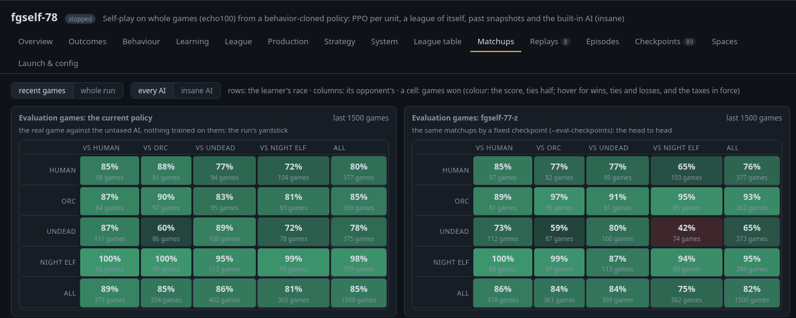

Warcraft III is a real-time strategy game from 2002. You gather gold and lumber, build a base, research technology, raise heroes and an army, and destroy your opponent while they do the same. More than twenty years on, people still play it competitively, and streamers such as former pro player Grubby and the casters of Back2Warcraft bring it to large audiences.
This post is about an agent that plays the whole game of Warcraft III on the classic ladder map Echo Isles, under the game's own rules, against the strongest opponent the game ships with, the built-in AI on insane. It now wins about nine games in ten. Here is how it got there, and what surprised us on the way.
Why this is hard
A game lasts 10 to 25 minutes, with thousands of decisions for dozens of units at once. There are four races with their own units, buildings and spells, and a fog of war hides the opponent. The one real reward, a win or a loss, comes at the very end. DeepMind's AlphaStar (StarCraft II) and OpenAI Five (Dota 2) mastered games like this in 2019 and beat top human players, with the game makers' help and a datacenter. AlphaStar trained 12 agents for 44 days on 32 TPUs each. We had one desktop and a game that was never built for any of this.
Running the real game, fast
Warcraft III has no API for bots, no headless mode and no faster-than-real-time option. It is a 32-bit Windows program, and its rules, pathfinding, spells and AI are decades of details that no reimplementation would get right. So we run the real thing, under Wine on Linux, about fifty copies at once, and drive it from Python.
The harness, written in the game's own map-scripting language, reports what the player can see every half second of game time and carries out the agent's orders. The shim, a small DLL inside the game process, replaces the game's clocks with a virtual one, so the game runs as fast as the CPU allows and waits at every step for Python's orders. Games are deterministic, so a replay reproduces a game step for step. That is how every video here was made.
Self-play speed, agent steps per second
An agent step is half a second of game time for one player (two steps per game second, and two players in a self-play game). Each bar adds one optimization to the ones above it.
Most of the speed came from removing waste, not from adding hardware. Games draw nothing, five share one load of the map, the per-unit bookkeeping moved from the game's script into C, and the network runs as CUDA graphs from a C++ loop. Today the desktop plays about 48 games at once, each about 15 times faster than real time, which adds up to roughly 730 hours of Warcraft III every hour.
The agent
The agent sees only what its player sees, and every half second it decides for every one of its units at once. The order head picks each unit's order, such as train, build, attack, move, cast or nothing. Given the order, the target heads pick what it is aimed at. A pointer picks a unit in view, and a point is chosen as x and then y, so both coordinates belong to the same spot. The memory carries a state from step to step, so the agent can remember what it saw before it went out of view. The value head estimates how the game will end; it reads hidden information and only helps training. The whole network is small, about 3.2 million weights. One decision for 60 units, with 120 in view, takes about 13 milliseconds on four cores of an ordinary CPU, far less than the half second it has.
How it learns from playing. The agent starts with behavioral cloning. Trained to predict the built-in AI's orders in thousands of the AI's own games, it begins as a copy of the AI. Then it plays against itself, its past selves and the built-in AI. After each batch of games, every order it gave is judged by what followed. If things went better than the value head expected at that moment, the order becomes a little more likely in that situation; if worse, a little less. That is the policy gradient, and the gap between what happened and what was expected is the advantage. A second term, a KL divergence, keeps training steady by pulling the policy back towards an earlier version of itself, the anchor, so one noisy batch cannot undo what already works. (The exact method is PPO, as in OpenAI Five, which also limits how far one update can move.)
Measuring progress
Training numbers can't tell whether a change made the agent better. The reward includes hints, and the training opponents change all the time, from past versions of the agent to a built-in AI whose handicap moves. So every training run also plays test games that it never trains on, the real game against the built-in AI on insane at full strength. Each experiment is a new run that starts from the best agent so far with one change. The new version and the one it started from play exactly the same matchups, with the same races and sides, so their win rates can be compared directly. After about 300 games each, a difference of five points stands out from the noise. Every experiment, with its numbers, is in the experiment log.

How it learned
The problem. A real game lasts up to 25 minutes, and the agent decides twice a second, for all of its units at once. That is 25 × 60 × 2, about 3,000 decisions per side before the one reward, a win or a loss, arrives. With a single result at the end it is hard to tell which of those decisions mattered, and an agent that loses every game gets nothing to learn from. Even an agent trained by behavioral cloning on the built-in AI's games on the real map lost all 40 of its test games.
A curriculum. So the agent started with easier problems and moved on as it got better. It began with small fights, then whole games on a small map with sped-up rules, then longer games, then the real map, first with fast rules and then with the game's own. At each stage a problem showed up in the test games, an experiment went after it, and most experiments failed. These are the ones that worked, in the order they came.
Micro fights came first, small battles of a hero and a few units a side that are over in seconds. They are where the pieces were worked out, including units as tokens, targets as pointers, behavioral cloning of a scripted player as the start, and a league of past selves.
27 September – 2 OctoberTwo-minute games
The whole game started on small flat maps with two bases laid out like Echo Isles' main ones, and the rules sped up seven times, so that a game took two minutes. The agent began with behavioral cloning of the built-in AI's orders. On its first day of self-play it lost game after game, even against the easy AI.
A fair opponent
What was wrong. The first self-play run won none of its last 75 games, so it had nothing to learn from. Two easier opponents were gamed. Given extra hit points, the agent never learned to spend, and against an AI that started late, it simply rushed the idle AI.
The change. The AI plays from the start but loses a share of what it gathers. The share grows after each of the agent's losses and shrinks after each win, so the agent wins about half of those games. The test games never have a tax.
The outcome. As the agent improved, the tax fell towards zero. By 2 October it won 79% of its test games against the AI.
2 – 14 OctoberSix-minute games, against insane
Next came a map with six-minute games and a harder target, the built-in AI on insane. Behavioral cloning started over here, on the AI's games on this map, and this time the tax worked only on paper. Most training games ended in a tie at the 20-minute limit. The agent out-built the taxed AI, sat on about 4,000 gold and lumber it never spent, and hardly attacked. The tax also hid its slow opening. At one minute the taxed AI had 7 supply against the agent's 15, while the untaxed AI had 21 and won the test games within five to seven minutes.
On-policy distillation from the built-in AI
What was wrong. After hours of self-play the agent had won only 1 of 98 test games. Behavioral cloning only shows the agent the situations the AI gets itself into, and the AI keeps its production queued. Its games hardly ever show an idle barracks with money in the bank, so the agent never learned what to do there.
The change. We added on-policy distillation. In half of the training games, the built-in AI labels the order it would give in every state the agent reaches, and a distillation loss moves the agent's orders towards those labels.
The outcome. From 1 win in 98 test games to 13 in 50, within fifty minutes, and the training games stopped ending in ties.
A week and a half of experiments followed, most of them level.
Credit that skips mistakes
What was wrong. A game's result is spread back over every action before it, so a good move followed by a lost fight was blamed for the fight.
The change. We used AlphaStar's UPGO, where credit follows the game only up to the first move that went worse than expected. From there on, the value's estimate stands in.
The outcome. 41% → 73% of its test games against insane, over two runs.
Turn on-policy distillation off
What was wrong. The agent now won about 60% against insane. It had overtaken the built-in AI, yet the distillation loss towards the AI's labels still drove most of each update.
The change. The distillation loss off, and no more labels from the AI.
The outcome. 51% → 63% against insane, and training ran faster without the AI in the games.
15 – 17 OctoberThe real map
By 14 October the agent won 80% of its games against insane on the six-minute map, so it moved on to the real thing, Echo Isles. The real map is far bigger and busier than the duel map, and a few things had to change with it:
- Where things are. Positions are measured from the agent's own base, at the scale it knew from the duel map, and the stretch between the bases is squeezed so that the enemy base is where it expects it. Without that, its buildings landed in the trees and its attacks went to the middle of the map, where the enemy base used to be.
- Where it can point. The grid of target points grew from 128 to 352 bins a side, to cover the bigger map.
- The rules, in two steps. First the six-minute map's fast rules on Echo Isles, then the game's own.
Trained on the fast rules on the real map, the agent won 49% of its test games under the real rules straight away. From there it climbed:
Games won against the insane AI on Echo Isles
Each bar is the best agent after one change, measured in test games it never trained on.
Look further ahead
What was wrong. Real games last up to 25 minutes, the small map's six, and the agent looked only about eight minutes ahead, so whatever paid off later hardly counted.
The change. A discount of 0.9997 instead of 0.999, about 28 minutes. The chart shows how much a win counts by how far ahead it comes.
The outcome. 55% → 59%, and the games got shorter. Half of the test games were over within 13 minutes, against 18 before, and fewer reached the 40-minute limit.
Find room to build
What was wrong. Building spots learned on the flat duel map often missed Echo Isles' trees, cliffs and blight, and the game refused three of four undead buildings.
The change. When a spot is blocked, the harness searches three times farther for a free one.
The outcome. 57% → 62%, once the agent had learned to use it.
Half the hint
What was wrong. Besides ±1 for the result, the agent gets small rewards along the way for material, meaning the cost of its living units and buildings against the opponent's. Hints like this can be gamed. Pay a reward for every unit trained, and the agent could train a footman, let it die and train another, collecting reward forever without getting closer to a win. So the reward is the change in the material lead (potential-based shaping). That gives +135 when the footman, worth 135 gold, is trained, and −135 when it dies. A loop pays nothing, and the best play stays the same.
Still, the material rewards could pull the agent towards trading armies rather than winning, and with the longer horizon the result itself now reached far back.
The change. Half the weight on material.
The outcome. 62% → 72%, the weakest races gaining most.
A looser anchor
What was wrong. Three experiments in a row ended level with where they started. Two forces train the agent. The reward pushes it towards better play, and a KL term pulls it back towards an earlier version of itself, the anchor, for stability. Measured per update, the push was about 1% signal and 99% noise, and the pull was clean.
The change. A quarter of the pull.
The outcome. Level for ninety minutes, then ahead, from 74% to 82%.
Give it a plan
What was wrong. The agent played one strategy, an early rush, and its losses were long games without tech.
The change. As in AlphaStar, half of the training games come with a target build order and tech path, drawn from 8,072 seen in games of the AI and of people, as an input to the network and with a small reward for following it.
The outcome. 84% → 89%, although it follows the targets only loosely.
Many more didn't help, and each one is a run in the log. Among them were rewarding hero levels, twice the learning rate, a bigger batch, more games for the weakest races, less of the built-in AI among the opponents, mixing behavioral cloning back in, an exploiter trained to beat the agent, more reward for following the target, annealing the material reward away, an anchor that moves along with the agent, and capping workers in the material reward.
Here is the agent today, with each of the four races.
What it can't do yet
It plays one strategy. It wins with an early rush of cheap units, half its wins inside ten minutes. When the rush fails the game goes long, and almost all of its losses are long games. In the best agent's 183 long losses, 27 minutes on average, it built a big base with 35 workers to the AI's 16, but stayed with two or three kinds of cheap unit to the AI's nine, and three upgrades to the AI's seventeen.
It neglects heroes. It raises about one a game, where the built-in AI raises one and a half or more.
So far, the target was the built-in AI. Apart from itself and its past selves, the insane AI is the only opponent it has played, and beating it was the whole goal. Good human players beat the insane AI every time; they are far stronger than anything the agent has faced. A human would likely see the rush coming and hold it off, and the long game that follows is where the agent is weakest.
What's next
The agent plays one way, and so far it has only learned to beat a script. Next, we want it to:
- Play more diverse strategies, not just one early rush.
- Keep getting better through self-play, well past the built-in AI.
- Play more maps. Beyond the ladder maps, Warcraft III has thousands of custom maps, the birthplace of whole genres, such as DotA, which became Dota 2 and inspired League of Legends, or the tower-defense map Legion TD, now the standalone Legion TD 2.
- Scale up compute. Everything here ran on one desktop, which played about 11 years of Warcraft III in all, two years a day at full speed. OpenAI Five played about 45,000 years of Dota 2 in ten months, some 250 years a day, on 800 petaflop/s-days of compute. AlphaStar trained 12 agents for 44 days on 32 TPUs each. And reinforcement learning, like language models, tends to improve predictably with more experience and bigger networks (scaling laws). Where this agent's curve bends is still open.
All of this runs on patch 1.29 from 2018. Newer versions of the game, from Warcraft III: Reforged in 2020 to today's 3.0 with its Definitive Edition graphics, run only through Battle.net, Blizzard's online launcher and copy protection, so we didn't attempt them.
The research continues, and there will be follow-up posts on how it goes. Until then, the details are in the project's documentation, including the experiment log with every run.